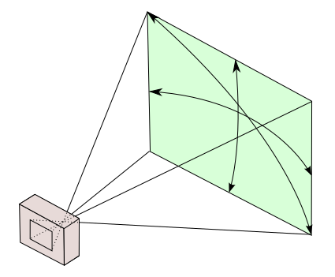

Cubesat Camera Field of View
Figure out the theoretical field of view, resolution, and other useful optical properties of a small camera on a cubesat in Low Earth Orbit.
Table of Contents
Field of View
The Field of View (FOV) of a camera effectively how much it can see, given the kind of camera and lens attached. For example a telescope has a small field of view, looking at just a tiny piece of sky at a time, while a fisheye cameras have a large field of view, able to take picures of a whole room at once.
Field of view is also closely related to the resolution of surface features, and will determine what kind of photos or potential science that will be possible.
Field of view is an angular measurement, typically expressed in degrees. For cameras with rectangular sensors the FOV in the horizontal and vertical direction will be slightly different. Usually for cameras the FOV is defined for each axis, e.g., 56°×48°

Visualization of the angular field of view of a rectangular camera sensor showing horizontal, vertical, and diagonal FOV.
If you know the size of the camera sensor, and the focal length of the lens in front of it, you can compute the field of view:
where
- $\alpha$ is the FOV
- $d$ is the size of the sensor
- $f$ is the focal length of the lens
Cell Phone Cameras
These days the ubiquitous small, cheap camera is the kind you find in cell phones. These cameras have fixed lenses often list the field of view or focal lenght in the specs. In the case of focal length, there are two kinds, the actual focal lenght of the physical lens in the system, and the “35 mm equivalent”. This 35 mm equivalent focal length is actually the field of view in disguise! The size of a 35 mm camera sensor is a standard value, so with a given lens focal length $f$ we can compute the angular FOV with eq. $\ref{eq:fov}$.
Example: iPhone 6s
The iPhone 6s rear camera is listed as a Sony IMX315, 12 MP CMOS camera with at 35 mm equivalent focal length of 29 mm1. The size of a 35 mm sensor is 24×36 mm, plugging $d$ = 24 mm and 36 mm, $f$ = 29 mm into eq. $\ref{eq:fov}$ we get a FOV of:
- 45° × 64° FOV
This is pretty typical for cell phone cameras.
What Does That Look Like From Space?
Assuming for the moment that one uses a cell phone camera as a sensor on a cubesat, what would you see?
Cubesats mostly operate around 300 to 500 kilometers above the ground. This is about the same as the International Space Station, so it’s easy to get a good idea of what we can see just by looking at existing photography from the ISS2.
{kind=link}
ISS040-E-1135903: August 27th 2014, looking down on the Pacific NW from ~400 km altitude. Camera focal length: 34 mm, very similar to the iPhone example (29 mm). Solar elevation: 55°. Credit: the International Space Station program and the JSC Earth Science & Remote Sensing Unit, ARES Division, Exploration Integration Science Directorate.
This is pretty representative of a low FOV camera pointed at the Earth from low Earth orbit. Depending on the resolution of the camera it’s still good enough to see individual (large) farms and even make out details in the cities.
Resolution
The field of view will tell us how much is visible in one picture, but we need another piece of information to determine how fine of detail we can resolve in the picture: Number of pixels (or the size of the pixels). If our camera has lots of pixels, we’re gathering more spacial data inside the field of view. So why not always have as many pixels as possible? It’s complicated, but more is not always better. There is a trade-off with other factors like noise.
IFOV
In remote sensing applications, instruments are often rated by their “IFOV” or Instantainous Field of View, which is the effective FOV of a single pixel in the camera, rather than for the whole image. If you know the distance to the subject it’s very easy to convert this to a linear size, i.e., smallest resolved feature in meters per pixel.
In our iPhone example the pixels are listed as being1 1.19 μm across. This is the size of one effective pixel, which is actually made up of four smaller elements, each covered by a color filter (this is how digital color cameras work). The physical focal length is 4.02 mm. Plugging into eq ${\ref{eq:fov}}$ gets us the IFOV of:
- 61 arcseconds
This is the field of view of a single pixel. To turn into a linear feature size at some distance we use:
where
- $d$ is the feature size
- $A$ is the distance to the feature
- $\delta$ is the angular size, or IFOV in this case
At a distance of 400 km that would give the iPhone a resolution of:
- 120 meters per pixel
Which is suprisingly good, though that’s mostly because 400 km is not very high up. Also a real iPhone would likely never have this crisp of view because of all the things stopping a real world system from having perfect resoultion including, but not limited to:
- Diffraction effects from the camera system
- Noise
- Blurring induced by the atmosphere
In practice a small camera likely has a resoluion worse that this naïve calculation.
Choosing A Camera
In the case where you know what resolution you want, and need to look through camera datasheets to find a matching one we can write some simple code.
First let’s define what we want in terms of resolution, and assume a small camera sensor (take a guess).
1
2
3
resolution = 100.0 #: desired resolution in meters per pixel
sensor_size = 5.0 #: mm (ignore aspect ratio)
altitude = 400e3 #: CubeSat altitude in meters
Then compute the camera specs for a few common resolutions:
1
2
3
4
5
6
7
8
9
10
11
12
13
14
15
16
17
18
19
from math import atan, tan, degrees
# some common camera resolutions
pixelcount = [2**10, 2**11, 2**12] # 1 MP to 16 MP
# nessisary IFOV for given resolution
ifov = 2 * atan(resolution/(2*altitude))
print "**Camera specs for seeing at %0.0f m/px**\n" % (resolution)
print " Camera resolution | Pixel Size [μm] | Focal Length [mm] | FOV [°] | 35 mm equiv. Lens "
print " ----------------- | -----------------: | ----------------: | ----------: | ----------------: "
for res in pixelcount:
pixel_size = sensor_size / float(res)
focal_length = pixel_size / (2*tan(ifov/2.0))
fov = 2 * atan(sensor_size / (2*focal_length))
film = 36 / (2*tan(fov/2.0))
print """ %d×%d | %18.2f | %17.1f | %11.1f | %14.0f mm
""" % (res, res, pixel_size*1000, focal_length, degrees(fov), film),
Camera specs for seeing at 100 m/px
| Camera resolution | Pixel Size [μm] | Focal Length [mm] | FOV [°] | 35 mm equiv. Lens |
|---|---|---|---|---|
| 1024×1024 | 4.88 | 19.5 | 14.6 | 141 mm |
| 2048×2048 | 2.44 | 9.8 | 28.7 | 70 mm |
| 4096×4096 | 1.22 | 4.9 | 54.2 | 35 mm |
It’s clear from the table that it’s probably better to have the highest resolution sensor you can get, if you want to save space and get high resolution.